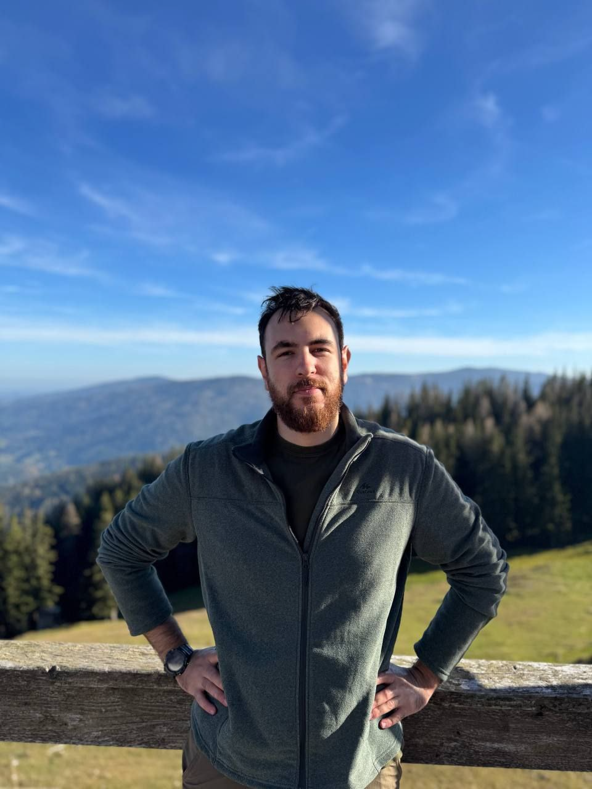

AI Engineer · Vienna
About
I work where models meet products: shaping the data, testing the method, building the service, and making the result understandable to the person using it.

How I work
Technical depth without losing the shape of the problem.
I am most useful on ambiguous work: incomplete data, a model that needs a real product around it, or a prototype that has to become dependable.
My background spans applied machine learning, computer vision, 3D geometry and toolpath software for multi-axis manufacturing, full-stack development, and hands-on making. That mix makes me comfortable moving between research questions, system boundaries, and user-facing details.
- Based in
- Vienna
- Austria
- MSc Data Science
- TU Wien
- 2022–2026
- Languages spoken
- 4
Experience
A practical route through software and AI.
- Current
Flexam
Software for industrial multi-axis additive manufacturing: 3D segmentation, slicing, toolpath and G-code generation for robot arms and multi-axis machines, and the full-stack slicer product in Go, Rust, Python, and TypeScript.
View project - Jan 2023 – Feb 2025
CTO & Data Scientist
susteam
ESG analytics platform for hospitality: product architecture, full-stack implementation, ML pipeline, and cloud infrastructure.
View project - Feb – Jul 2024
Research Scientist
TU Wien · Rail4Future
Rail-irregularity analysis and LSTM modelling for a digital-twin platform with Siemens and ÖBB.
View project - Feb – Jul 2021
Machine Learning Analyst
GLOSAV
Real-time computer vision for railway-route and obstacle detection.
View project - 2020–2021
Engineer & Project Manager
Arterra Miniature
3D modelling, prototyping, software, and end-to-end delivery.
- 2019
Frontend developer
KRK Group
React interfaces and API integrations for a corporate education platform.
View project - 2018–2019
- 2017–2018
Web developer
Freelance
Frontend and backend work: new applications and extensions to existing systems.
View project
Machine learning & vision
- PyTorch
- TensorFlow
- scikit-learn
- OpenCV
- YOLO
Language & retrieval
- NLP
- LLMs
- RAG
- LangChain
Software engineering
- Python
- Go
- Rust
- TypeScript
- JavaScript
- C++
- Node.js
- Bun
- Svelte
- React
- three.js
- FastAPI
- Docker
3D & manufacturing
- 3D segmentation
- mesh processing
- slicing
- toolpath generation
- G-code
- robot arms
- multi-axis printing
- trimesh
Data & infrastructure
- PostgreSQL
- MongoDB
- Redis
- AWS
- Linux
- nginx
- Git
- CI/CD
Languages
- English C1
- Russian C2
- Armenian B2
- German A2
Education & recognition
Education and recognition
Diploma thesis: 3D-printer failure-detection system based on computer vision.
View the thesis projectAwards & publication
“TiRex vs Pharma” — machine-learning models that forecast post-generic drug erosion from sparse data, using CatBoost and the xLSTM-based TiRex model.
Team “Nightwalkers” — a multi-tool AI agent that autonomously answered complex sustainability questions, reaching over 70% accuracy on database and Wikipedia queries.
Hosted by TIMETOACT Group — RAG for greenwashing detection.
View projectTourism knowledge graph with an interactive map.
View projectComparative Analysis of Machine Learning-based Surrogate Modeling Approaches for Multi-body Dynamic Simulation in Railway Digital Twin Platform
Co-authored with S. Zhou et al.
DOI 10.1109/IEEM62345.2024.10857013 (opens in a new tab)